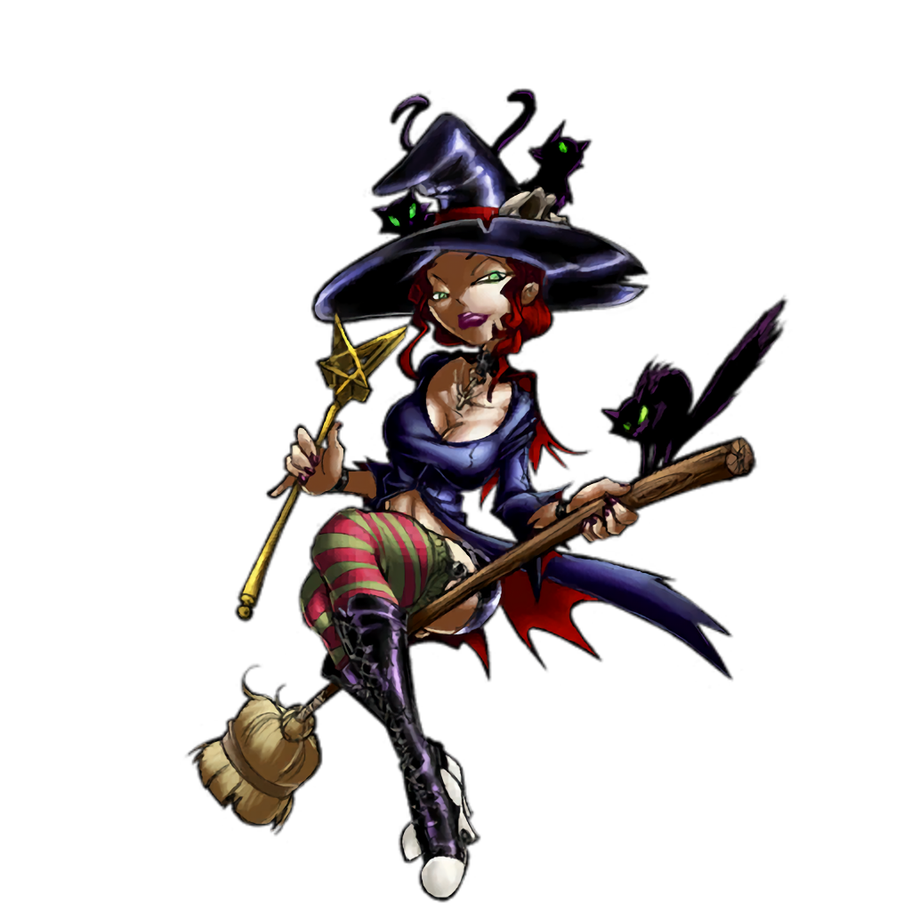
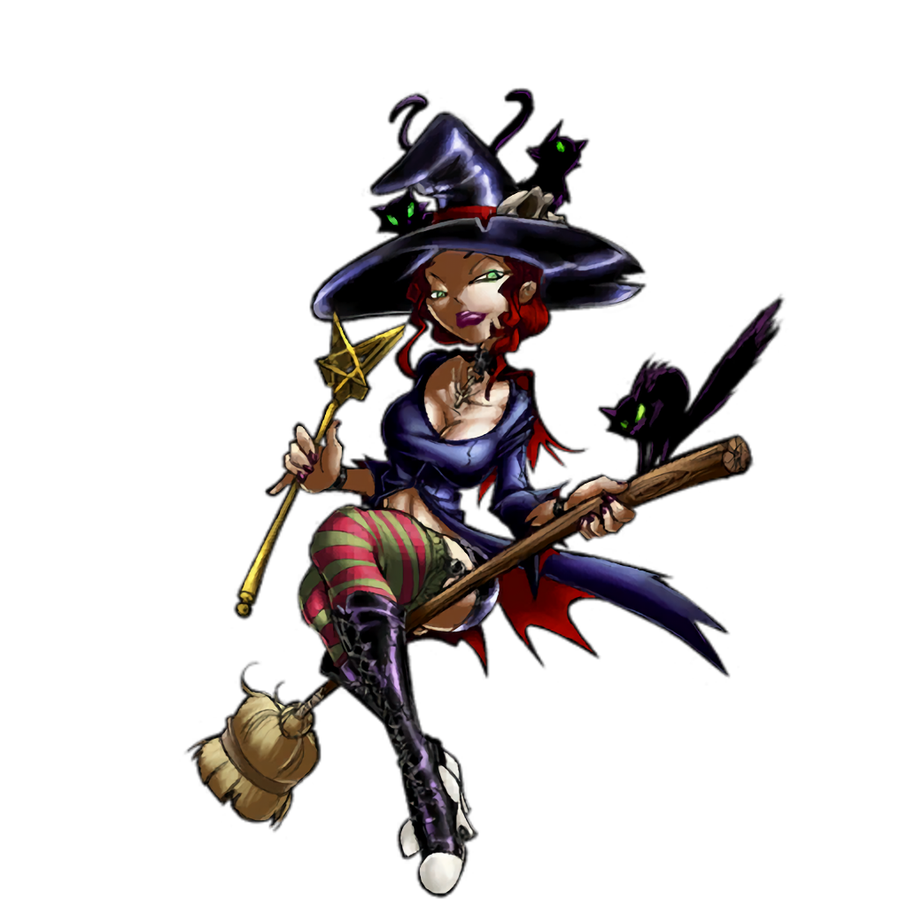

How to Install the Patches
To install a patch download patcher, run as admin, set game folder, extract the patch, Select "My Mod" and install, if you have problems someone can help in the discord
To install a patch download patcher, run as admin, set game folder, extract the patch, Select "My Mod" and install, if you have problems someone can help in the discord
